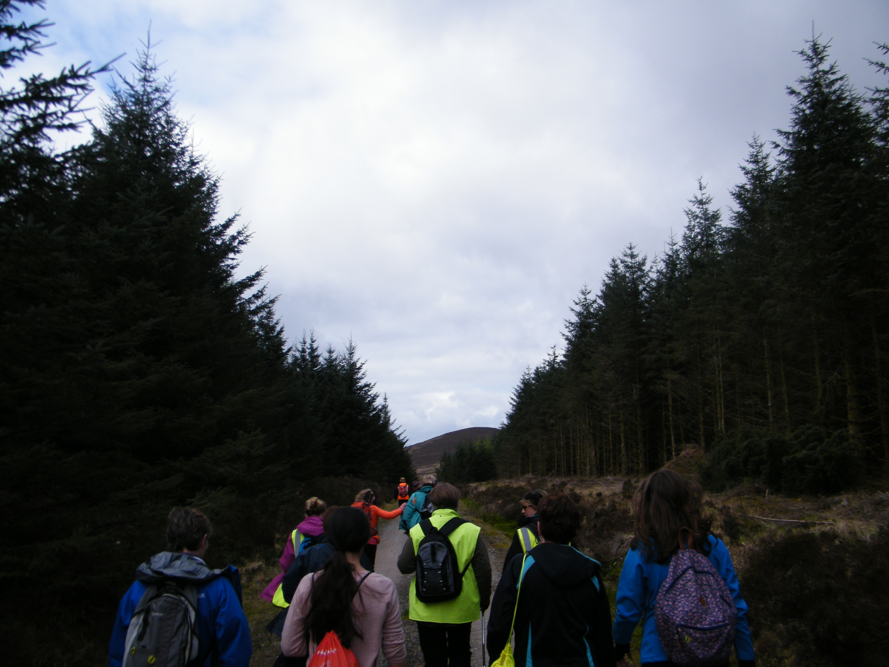

Centra 21 Day Challenge full Plan Here
Map
Eager to start.
Mount Melleray Abbey.
Plenty signs on todays walk.
Plenty Pilgrims.
Among the Knockmealdowns.
Great Views.
Impressive numbers on todays walk.
River Blackwater beyond Cappoquin.
A scatter of Pilgrims.
Time for a rest.
Looking towards Ardfinnan, the yellow fields are close to Ballybacon.
Slievenamon in the distance.
We reached the yellow Rapeseed fields crossing the river Duag.
Vibrant colours.
Looking towards the Galty Mountains from Ballybacon.
The finish line.
Dillon Age 9 and Mick Watkins Age 79 possibly the youngest and oldest on todays walk.